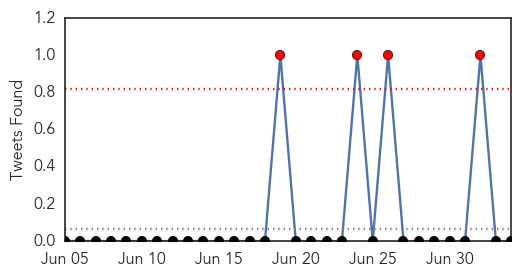
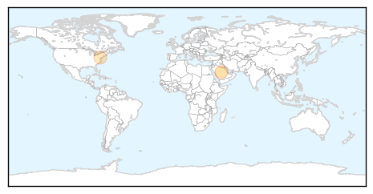

Influenza
30-Day Web Trend
0 alerts, 0 warnings

30-Day Twitter Trend
0 alerts, 0 warnings

Article Locations
Article Confidences

Top Articles:
Top Tweets:
-
No tweets found for Jul 04, 2014
West Nile Virus
30-Day Web Trend
6 alerts, 2 warnings

30-Day Twitter Trend
0 alerts, 0 warnings

Article Locations

Article Confidences

Top Articles:
- 0.974
- Vermont DOH warns about Triple E, West Nile Virus
- 0.972
- Health Department Issues Chikungunya Virus Alert « CBS Pittsburgh
- 0.945
- Windsor launches West Nile program as virus detected in Michigan
- 0.942
- West Nile surfaces in Pueblo, Saguache
- 0.918
- Macomb County takes precautions against West Nile virus
- 0.845
- USM researchers working toward vaccine for West Nile Virus
- 0.536
- West Nile in Saginaw County: Mosquito Control officials take it seriously
Top Tweets:
-
No tweets found for Jul 04, 2014